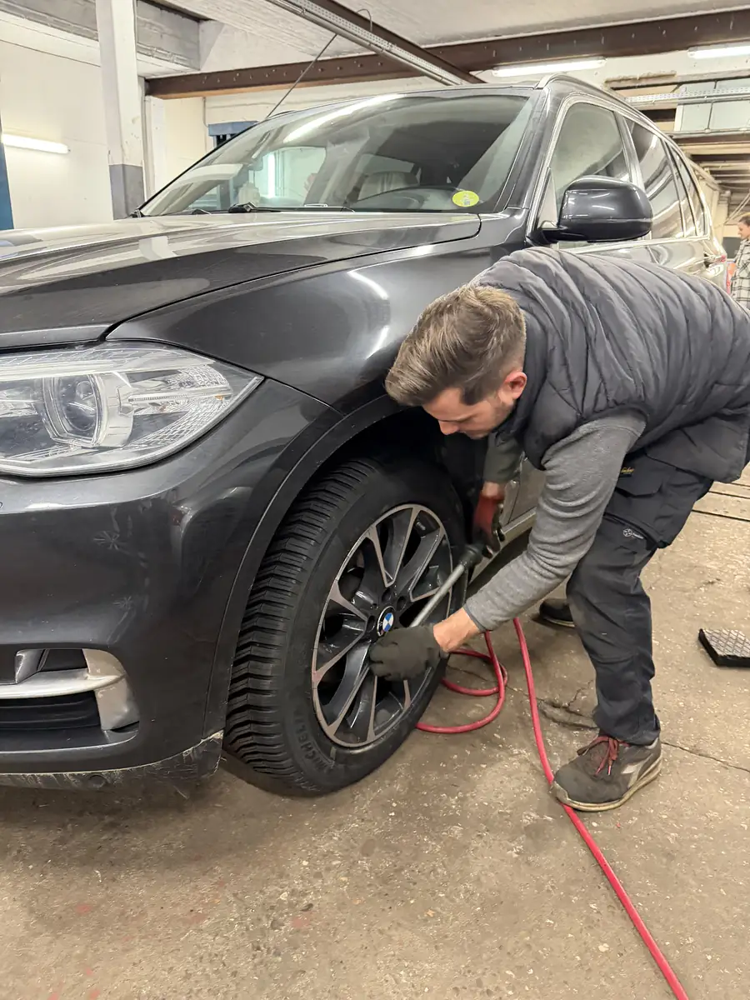
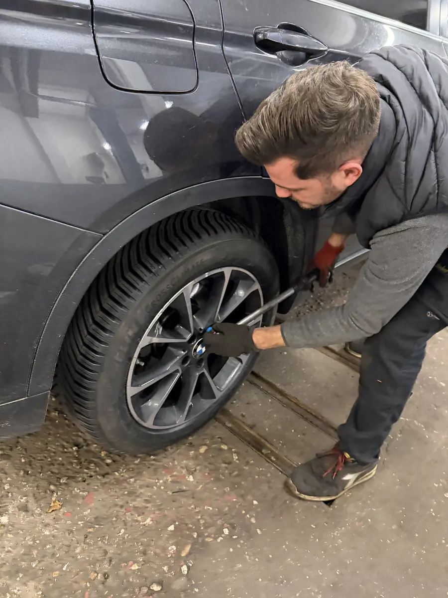

L'hiver arrive et vos pneus été sont encore montés? Ou vos pneus sont usés et il faut les changer? Chez DMT AUTOGROUP à Zaventem, on s'occupe de tout : vente de pneus toutes marques, montage, équilibrage et permutation été/hiver. Rapide, bien fait, bon prix. De winter komt eraan en uw zomerbanden zitten er nog op? Of zijn uw banden versleten? Bij DMT AUTOGROUP in Zaventem zorgen we voor alles: verkoop van banden alle merken, montage, balancering en seizoenswisseling.
On vend des pneus de toutes les marques : Michelin, Continental, Bridgestone, Goodyear, Hankook, et aussi des marques plus accessibles pour les petits budgets. Pneus été, pneus hiver, pneus 4 saisons — on vous conseille en fonction de votre voiture et de votre usage. Si vous roulez surtout autour de Zaventem, Diegem et Kraainem, les 4 saisons peuvent être un bon choix. Si vous faites beaucoup d'autoroute, on vous orientera plutôt vers des pneus été + hiver séparés. Et si vos jantes ont des éraflures de trottoir, notre atelier de carrosserie peut les remettre en état. We verkopen banden van alle merken: Michelin, Continental, Bridgestone, Goodyear, Hankook, en ook meer betaalbare merken. Zomerbanden, winterbanden, 4-seizoenenbanden — we adviseren u op basis van uw auto en uw gebruik. Hebben uw velgen stoeprandschade? Ons carrosserie-atelier kan ze herstellen.
Notre machine à pneus professionnelle JBM monte vos pneus en quelques minutes, sans abîmer vos jantes — même les jantes alu fragiles. On vérifie aussi l'état des valves et on contrôle la pression. Lors du montage, on en profite pour vérifier l'état de vos freins et plaquettes — c'est le moment idéal car la roue est déjà démontée. Que vous veniez de Sterrebeek, Nossegem ou Woluwe-Saint-Lambert, on vous accueille sans rendez-vous pour le montage. Onze professionele JBM bandenmachine monteert uw banden in enkele minuten, zonder uw velgen te beschadigen — zelfs kwetsbare aluminium velgen. Tijdens de montage controleren we ook de staat van uw remmen en remblokken — het ideale moment want het wiel is al gedemonteerd.


Des vibrations dans le volant à 100 km/h? C'est souvent un problème d'équilibrage. Après chaque montage, on équilibre vos roues pour un confort de conduite optimal. C'est rapide, c'est inclus dans notre service pneus, et ça fait une grosse différence sur la route. Trillingen in het stuur bij 100 km/u? Dat is vaak een balanceringsprobleem. Na elke montage balanceren we uw wielen voor optimaal rijcomfort.
Chaque année c'est la même chose : il faut passer de pneus été en pneus hiver et vice versa. Chez DMT AUTOGROUP, on fait la permutation rapidement. Amenez vos pneus ou récupérez-les chez nous. On vérifie l'usure, la pression, et on vous dit honnêtement s'il est temps de les remplacer. Profitez-en aussi pour faire votre vidange huile moteur en même temps — comme ça tout est fait en une seule visite. Pensez aussi à faire un pré-contrôle technique en même temps — deux oiseaux, une pierre. Elk jaar hetzelfde: van zomerbanden naar winterbanden en omgekeerd. Bij DMT AUTOGROUP doen we de wisseling snel. Breng uw banden mee of haal ze bij ons op. We controleren slijtage en spanning. Profiteer ervan om tegelijk uw olieverversing te laten doen — zo is alles in één bezoek geregeld.


Lundi — Vendredi · 08:30 — 18:00
Mechelsesteenweg 270, 1933 ZaventemMaandag — Vrijdag · 08:30 — 18:00
Mechelsesteenweg 270, 1933 Zaventem